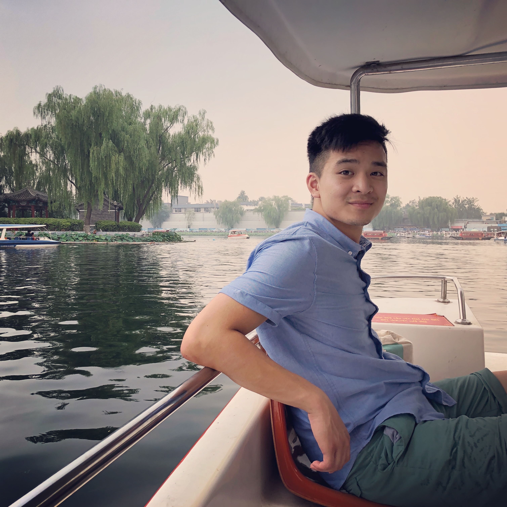

<nav class="navbar navbar-expand-lg navbar-dark bg-dark fixed-top" id="sideNav">
  <a class="navbar-brand js-scroll-trigger" href="#page-top">
    <span class="d-block d-lg-none">Tzi Yang Lum</span>
    <span class="d-none d-lg-block">
      
    </span>
  </a>
  <button
    class="navbar-toggler"
    type="button"
    data-toggle="collapse"
    data-target="#navbarSupportedContent"
    aria-controls="navbarSupportedContent"
    aria-expanded="false"
    aria-label="Toggle navigation"
  >
    <span class="navbar-toggler-icon"></span>
  </button>
  <div class="collapse navbar-collapse" id="navbarSupportedContent">
    <ul class="navbar-nav">
      <li class="nav-item">
        <a class="nav-link js-scroll-trigger" href="#about">Profiel</a>
      </li>
      <li class="nav-item">
        <a class="nav-link js-scroll-trigger" href="#experience">Werkervaring</a>
      </li>
      <li class="nav-item">
        <a class="nav-link js-scroll-trigger" href="#education">Educatie</a>
      </li>
      <li class="nav-item">
        <a class="nav-link js-scroll-trigger" href="#skills">Vaardigheden</a>
      </li>
      <li class="nav-item">
        <a class="nav-link js-scroll-trigger" href="#interests">Interesses</a>
      </li>
    </ul>
  </div>
</nav>
